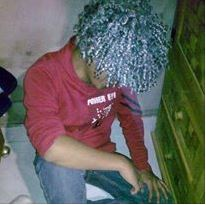

Acerca de Nosotros
El desarrollo de aplicaciones web está en continuo cambio, avance y desarrollo, evoluciona cada día. Es más complejo y exigente en cuanto a desarrollo y programación. En PAW buscamos crear una plataforma de calidad para la enseñanza de MACROMEDIA DREAMWEAVER, el uso de las tecnologías es un factor importante para dar ese avance y acercar de manera más fácil los conocimientos a los alumnos.
Es por eso que usando una metodología clara y directa: Creamos la plataforma que se necesita, tratando de mejorarlo cada vez más.
Sabemos que la materia de diseño de aplicaciones web es muy extensa es por eso que se busca facilitar su manera de enseñanza.
Equipo de Trabajo

Dante Lopez Rosas

Jose de Jesus Montiel Pulido
-
Karen Sarahi Ramirez Armendariz
-
Mariam I. Martinez Hernandez
- 
Omar Medel Hernandez
Acerda del Sitio
PAW tiene como objetivo enseñar ejemplos relacionados con el software Macromedia Dreamweaver, el cual es un software propiedad de la empresa Adobe. Este consta de teoría, ejemplos, enlaces a fuentes externas de ayuda como son PDF’s videos, así como autoevaluaciones para ver que tanto se ha aprovechado los temas de la unidad. Esperemamos que este sitio sea de gran ayuda a la comunidad estudiantil de la Facultad de Ciencias de la Computación (FCC), recibimos su opinión y comentarios en la ficha Comentarios de este sitio web.
El equipo de desarrollo.